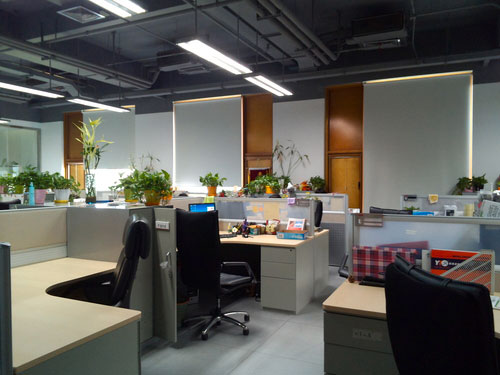

I was an implementation consult intern at Beijing UFIDA Government Affairs Software Co.,Ltd. What I was doing there was to support the implementation of the financial softwares UFIDA has sold to the State Council Information Office. Specifically, I was working at the customer site to solve the problems raised by the customers. Another major part of my daily tasks is to test the software and create testing reports. In addition, I have created a user guide for the entire system.
